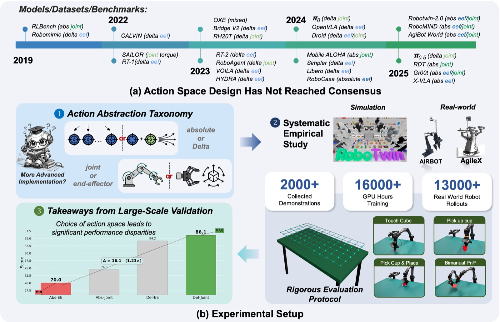
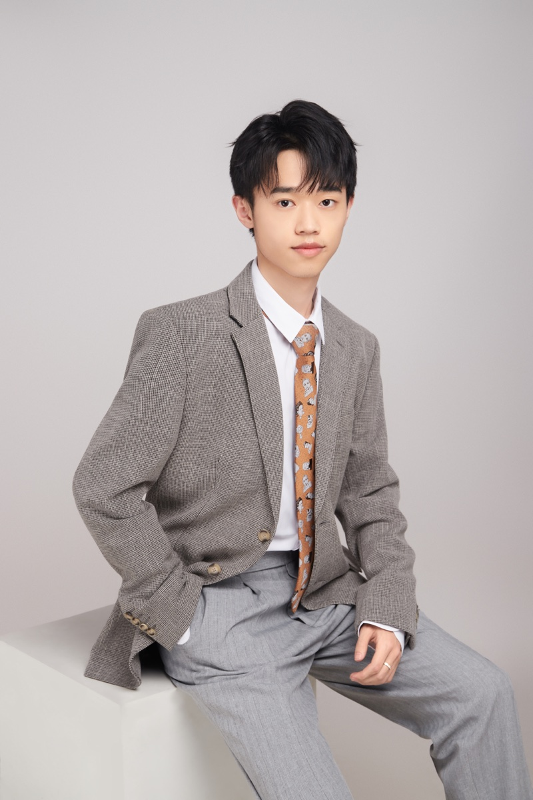
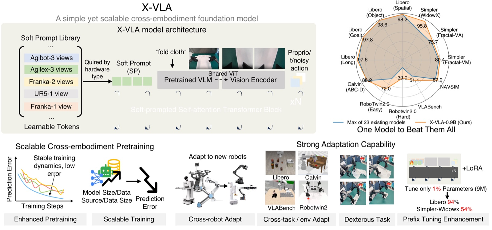
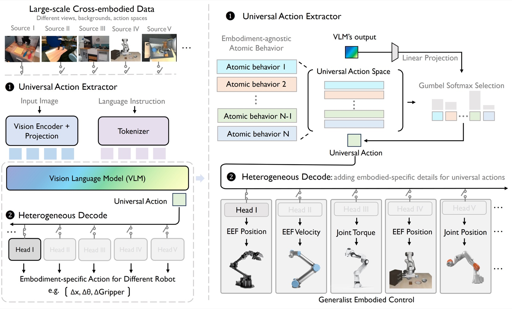
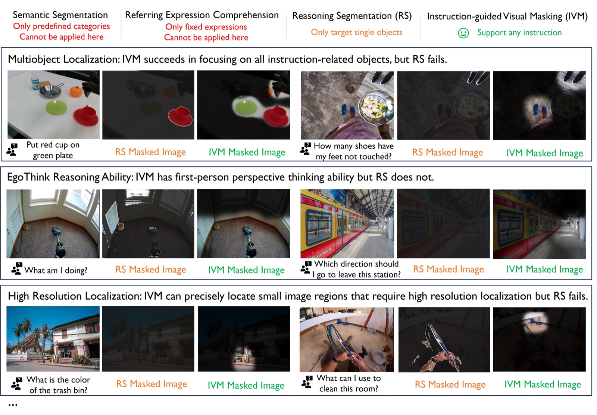
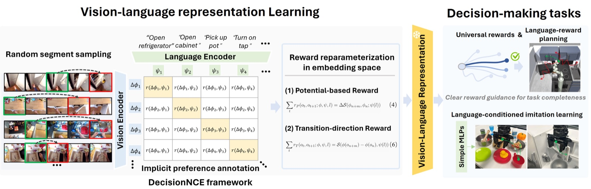

2026
Demystifying Action Space Design for Robotic Manipulation Policies
International Conference on Machine Learning (ICML), 2026
Best Paper Award, ES-Reasoning Workshop @ ICLR 2026
Ph.D. Candidate, Tsinghua University
I am a Ph.D. candidate in Mechanical Engineering at the Institute for AI Industry Research (AIR), Tsinghua University. I work on embodied AI, with a particular interest in generalist robot policies, cross-embodiment learning, multimodal representation learning, and generative models.
I am advised by Prof. Xianyuan Zhan and Prof. Ya-Qin Zhang. I am always open to research discussions and collaboration.

Embodied AI · Robot Learning · Vision-Language-Action Models · Cross-Embodiment Learning · Multimodal Representation Learning · Generative Models
* denotes equal contribution

International Conference on Machine Learning (ICML), 2026
Best Paper Award, ES-Reasoning Workshop @ ICLR 2026




Ph.D. Candidate in Mechanical Engineering
School of Vehicle and Mobility · Institute for AI Industry Research
B.S. in Computer Science and Technology
Excellent Graduate
Reviewer for RA-L, ICML, ICLR, NeurIPS, CVPR, ICCV, ECCV, AAAI, and WACV.